ABB mobil tətbiqi üçün gamification funksiyası: istifadəçi virtual bonsai əkir, hər 6 saatdan bir sulayır, 6 mərhələ boyu böyüdür — və prosesi tamamlayanda ABB onun adından real ağac əkir. Aşağıda bu funksiyanın hər addımı, hər ekranı və oyunun bütün vəziyyətləri addım-addım göstərilib.
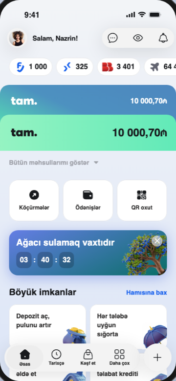
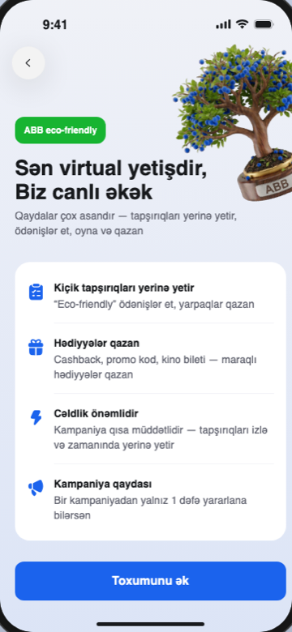
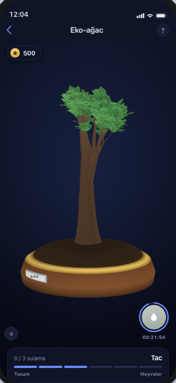
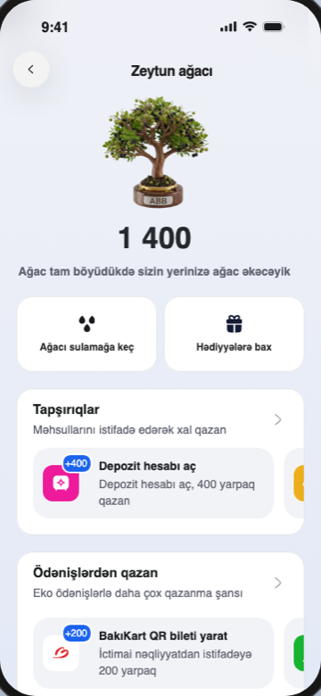
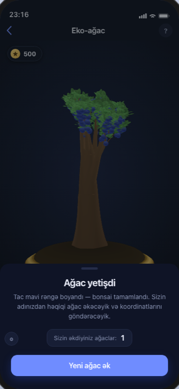
Kampaniyaya keçid üçün əsas səhifədə banner göstərilir. Banner istifadəçi tərəfindən X düyməsi ilə bağlana bilər — məcburi deyil, diqqəti cəlb edir, amma sıxışdırmır.
Banner daxilindəki geri sayım ağacı 6 saatdan bir sulamaq üçün çağırışı vizual olaraq xatırladır. Əgər ağac 48 saat ərzində sulanmasa, o quruyur — bu, istifadəçini müntəzəm qayıtmağa təşviq edən yüngül təzyiqdir.
"Kəşf et" bölməsi fərqli kampaniyalar üçün ayrıca banner sırası göstərir. Eko-ağac kampaniyası da burada, digər aktiv kampaniyaların yanında yer alır.
Bu bannerlər vasitəsilə istifadəçi birbaşa müvafiq kampaniyaya keçid edir — Eko-ağac üçün bu, məhsul tanıtımı ekranına aparan giriş nöqtəsidir.
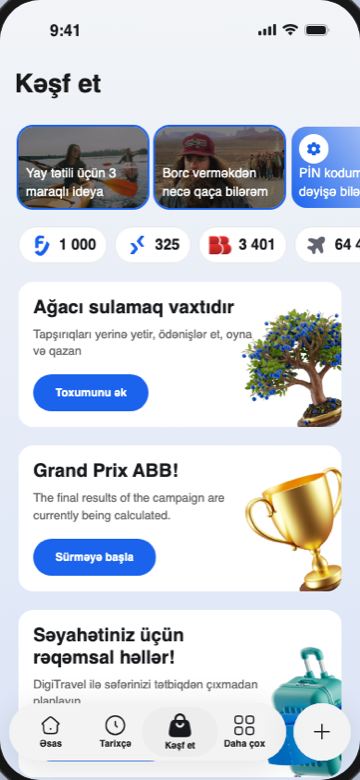
Onboarding ekranı kampaniya haqqında istifadəçiyə qısa məlumat verir: necə xal qazanmaq olar, hansı hədiyyələr gözləyir, niyə tələsmək lazımdır.
"Toxumunu ək" CTA düyməsi vasitəsilə istifadəçi kampaniyaya faktiki giriş edir — bu, funksiyanın "bəli, iştirak edirəm" anıdır.
İstifadəçiyə horizontal scroll vasitəsilə bir neçə ağac növü arasında seçim təklif olunur — Zeytun, Şam, Ərik, Gavalı ağacı. Hər variant öz görünüşü ilə fərqlənir, seçim isə tamamilə şəxsi zövqə əsaslanır.
Seçilən ağac növü bundan sonra bütün kampaniya boyu istifadəçinin öz ağacı olaraq izlənir.
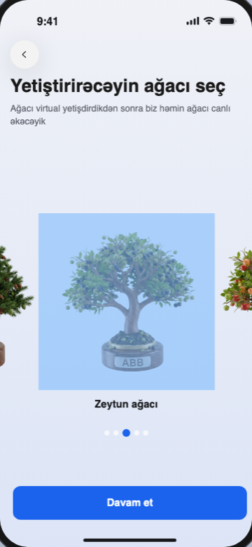
Seçilən ağac növü hero image olaraq görünür, yığılan yarpaq sayı isə əsas göstərici kimi önə çıxarılır.
Xal qazanmanın yolları "Tapşırıqlar" və "Ödənişlərdən qazan" bölmələrində əksini tapır. "Liderlər lövhəsi" istifadəçinin cari tutduğu yeri və digər ABB müştərilərini göstərərək yarışma hissi yaradır. "Qazandıqlarının tarixçəsi" bölməsində isə hansı əməliyyatdan neçə yarpaq qazanıldığı ətraflı görünür.
"Ağacı sula" düyməsi birbaşa canlı 3D oyuna yönləndirir.
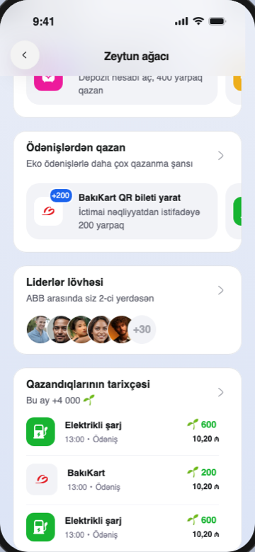
"Ağacı sula" düyməsinə basdıqdan sonra istifadəçi sıfırdan yazılmış, xüsusi WebGL mühərriki üzərində işləyən canlı bonsai səhnəsinə keçir. Ağac 6 mərhələdən keçərək böyüyür — hər mərhələ 3 sulama tələb edir, sulama isə hər 6 saatdan bir mümkündür. Aşağıda oyunun bütün əsas vəziyyətləri göstərilib.
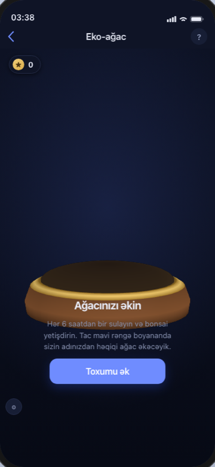
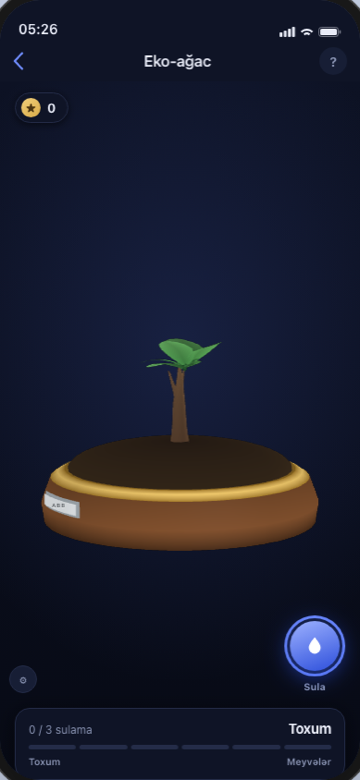
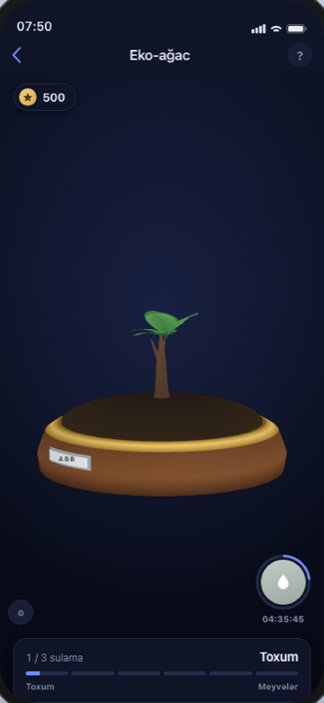
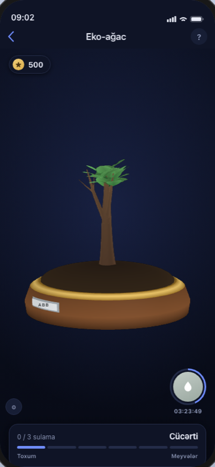
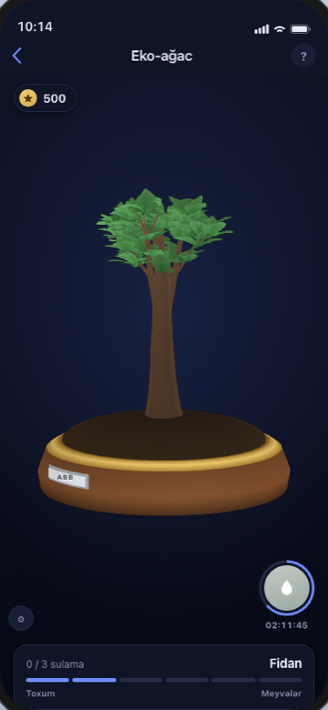
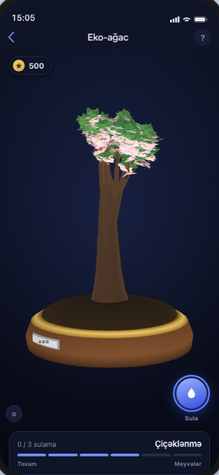
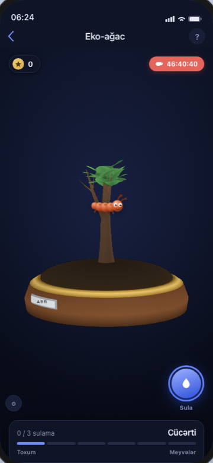
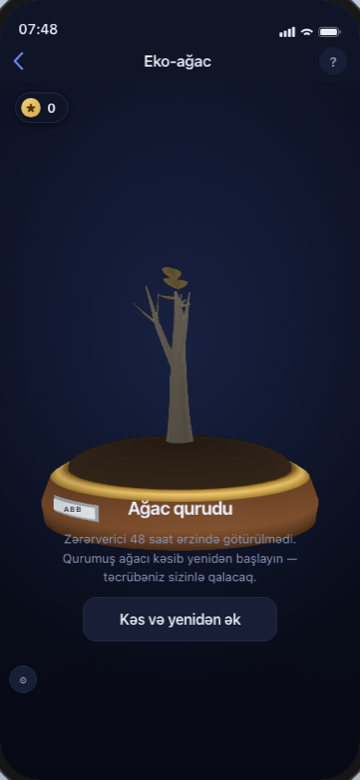
Kampaniya səhifəsindən açılan ayrıca ekran — istifadəçilər digər ABB müştəriləri ilə yığılan yarpaq sayına görə yarışır. "Bu həftə" və "Ümumi" tabları arasında keçid mümkündür.
Bu ekran sırf gamification məqsədi daşıyır: sosial müqayisə istifadəçini daha tez-tez qayıtmağa təşviq edən əlavə bir qat yaradır.
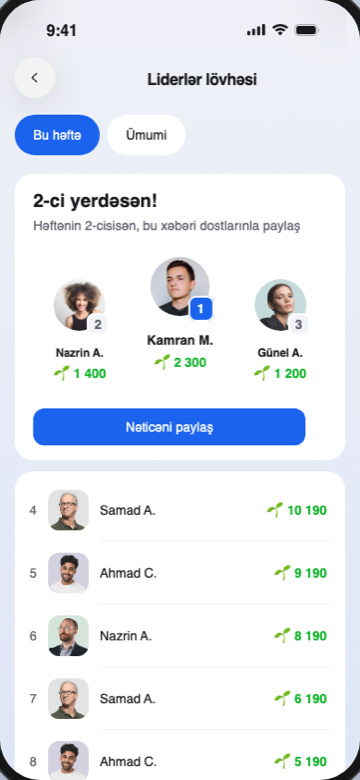
Yeddi ekran, altı böyümə mərhələsi və sıfırdan yazılmış WebGL mühərriki — hamısı bir məqsədə xidmət edir: bank tətbiqindəki gündəlik adəti, real ekoloji nəticəyə çevirmək. İstifadəçi mobil tətbiqdə bir neçə saniyə sərf edir, ABB isə onun adından həqiqi ağac əkir.